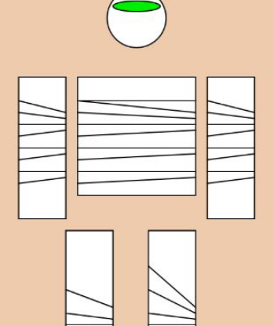

Javascript
JavaScript ist eine weitverbreitete, serverseitige und clientseitige Skriptsprache, die in erster Linie für die Entwicklung von dynamischen Webseiten verwendet wird. Sie ermöglicht es Entwicklern, interaktive Funktionen hinzuzufügen, auf Benutzeraktionen zu reagieren und den Inhalt von Websites in Echtzeit zu aktualisieren. JavaScript ist eine Kernkomponente der modernen Webentwicklung und wird von allen gängigen Webbrowsern unterstützt. Mit seiner Fähigkeit, sowohl auf der Client- als auch auf der Serverseite eingesetzt zu werden, spielt JavaScript eine zentrale Rolle in der Gestaltung und Funktionalität von Websites und Webanwendungen.
Aufträge
Von Montag bis Dienstag haben die Lernenden an Aufträgen gearbeitet, die sie von Reto erhalten haben. Diese bestanden daraus, die Grundlagen von Javascript kennenzulernen. Sie haben dort gelernt:
- Formen zeichnen
- Animationen zu erstellen
- Mit Formen zeichnen
- Bilder abspeichern
- Gesichter Formen
natürlich gibt es noch einiges mehr, was sie gelernt haben. In den Aufträgen, ging es hauptsächlich darum, diese Dinge gut auszuführen und zu lernen.
Die Fabelwesen
Am Mittwoch sind alle Lernenden ins ZLI gekommen und gleich angefangen die Fabelwesen auszuwählen. Auf der Wikipedia Seite gibts eine Liste mit sehr vielen Fabelwesen. Diese Fabelwesen wurden gewählt:
- Mumie
- Grinch
- Osterhase
- Gespenst
- Hydra
- Greif
Nachdem die Lernenden ihr Fabelwesen ausgewählt haben, fingen sie an es zu designen. Manche wurden besser und andere weniger gut. Die Animationen konnten selbstverständlich auch selber ausgesucht werden. Einige machten eine Animation, die auf ihr Fabelwesen definiert waren. Die meisten machten jedoch einfach eine Animation, indem es sich von links nach rechts bewegt. Am Schluss des Tages, hielten alle Lernenden noch eine kurze Presentation.
Fazit
Die Lernenden haben vieles über Javascript gelernt. Dazu gehören Animationen Formen und mehr. Es wurden Fabelwesen gezeichnet und animiert.